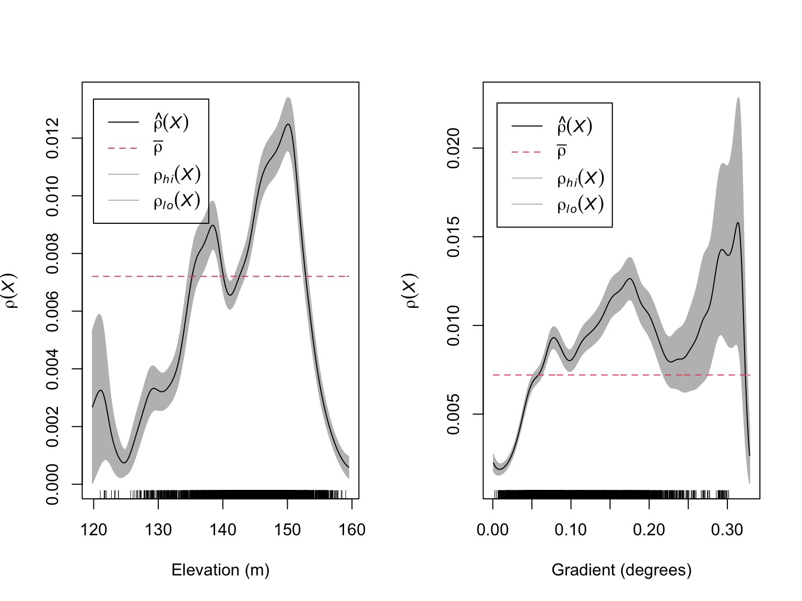
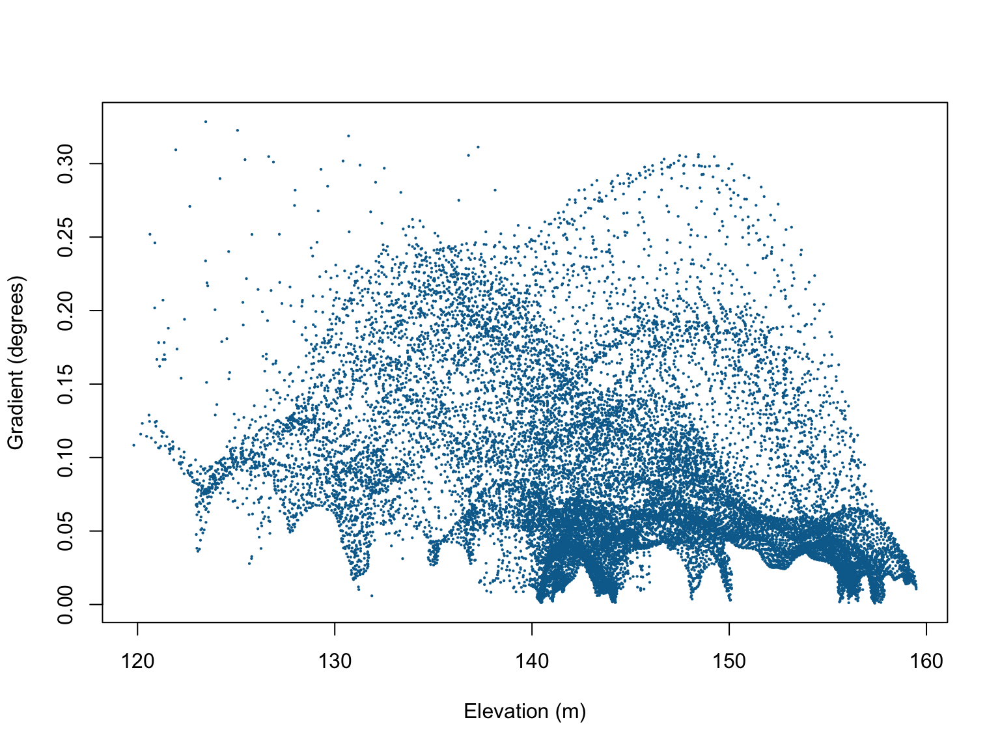
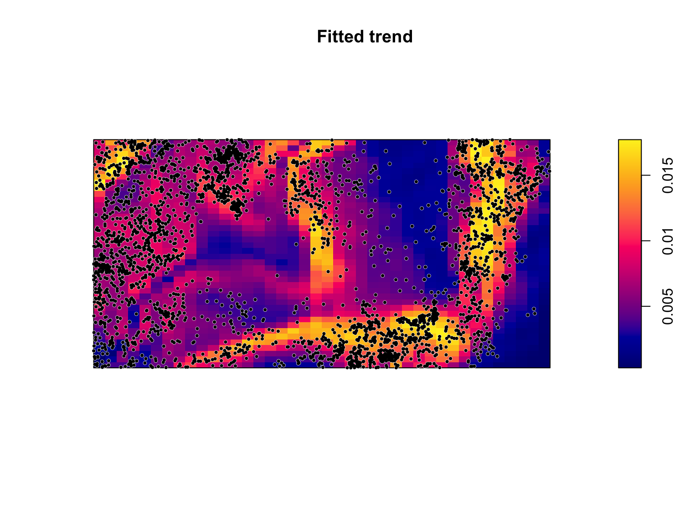
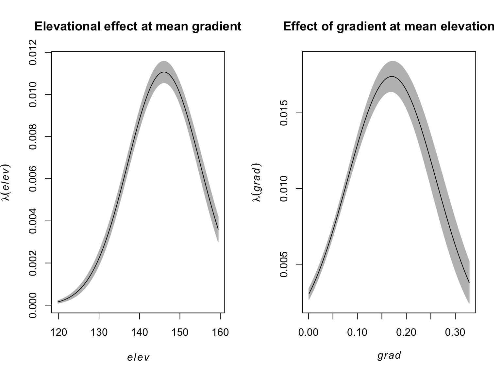
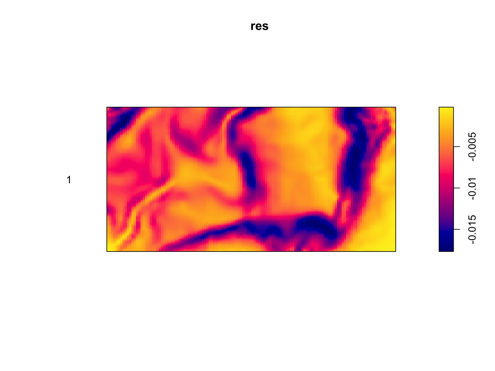
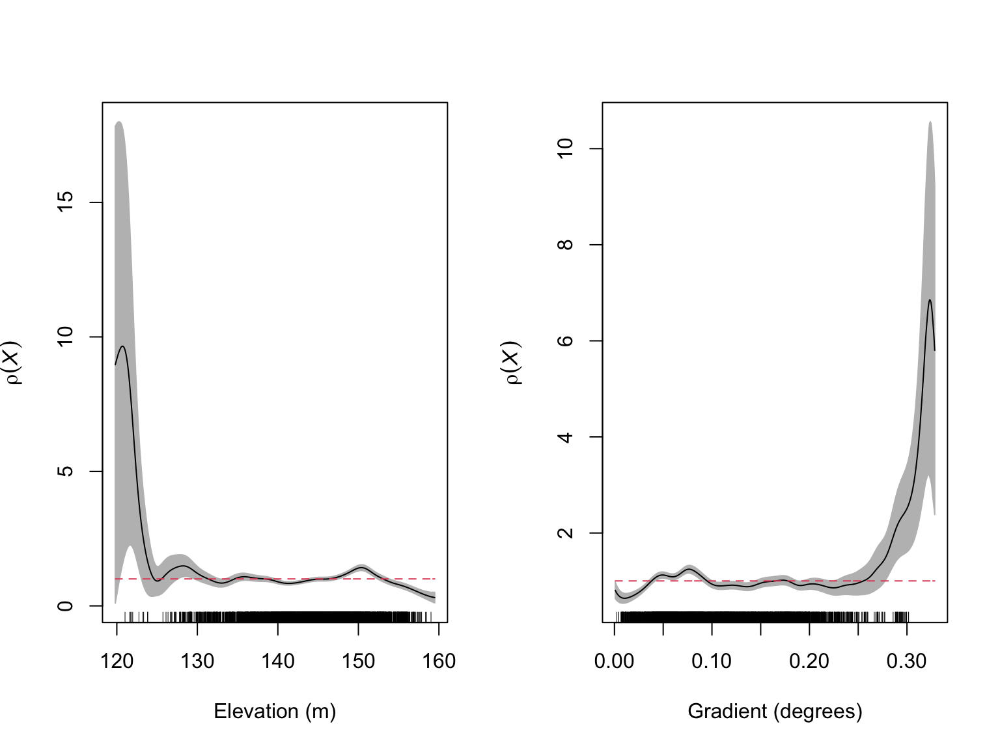
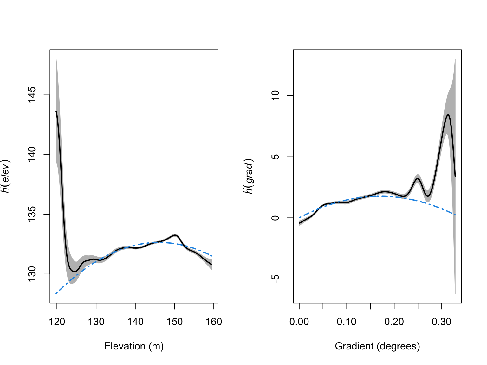
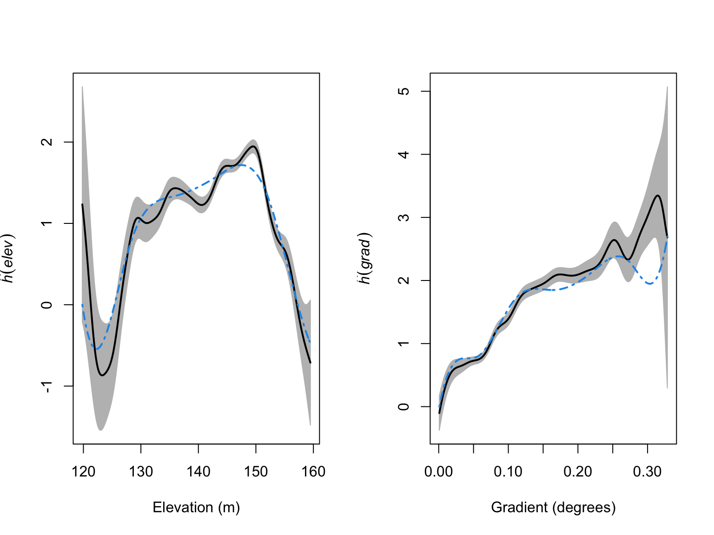
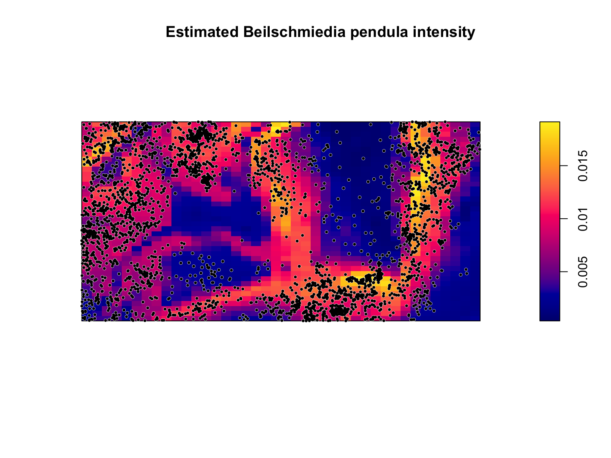

We have covered methods for describing the spatial arrangement of points and answering questions such as “Are the points uniform?”, “Does the intensity depend on a covariate?”, “Are they clustered?” and so on… In asking these questions were are not really interested in the points per se, but in the process that generated the points. In order to be able to make general statements about how we expect points to be arranged, we need to model our system.
In this lab we will:
In this lab we will again be using the bei dataset. This
is a point pattern giving the locations of 3605 trees in a tropical rain
forest in Panama. Accompanied by covariate data giving the elevation and
slope in the study region. The supporting covariate information is
stored in a seperate object called bei.extra.
A point process, X, is a random (in the statistical sense) process whose outcome is a ‘point pattern’. A point pattern is a set \(\mathbf{x} = \{x_1,x_2,...\}\) of points in a two-dimensional space (although the concepts translate to higher or lower dimensions), which has a finite number of points in any bounded region \(B\) (i.e., \(n(\mathbf{x} \cap B)\) is finite). This implies that for any bounded region \(B\), the number of points \(n(\mathbf{x} \cap B)\) is a well-defined random variable.
Under an assumption of homogeneity, the expected number of points falling in any region \(B\) is proportional to its area \(|B|\):
Under an assumption of independence, \(n(\mathbf{x} \cap A)\) provides no information on \(n(\mathbf{x} \cap B)\), which in turn implies that the number of points falling in bounded regions are independent random variables. Because we assume that the property of independence should hold for regions of any shape and/or size, taking finer and finer spatial subdivisions (i.e., the area of \(B \to 0\)) results in more and more independent random variables. When the size of the squares is extremely small, most will be empty and there is a negligible probability that a square will have $>$1 point. This implies that \(n(\mathbf{X} \cap B)\) is the number of successes in a large number of independent trials, which implies that \(n(\mathbf{X} \cap B)\) follows a Poisson distribution. Because \(\mathbb{E} n(\mathbf{x} \cap B) = \lambda |B|\), this means that \(n(\mathbf{X} \cap B)\) is a Poisson distributed random variable with mean \(\lambda |B|\).
We are therefore dealing with a Poisson point processes that is described by an intensity function \(\lambda(u)\), which implies we need to build a statistical model that estimates \(\lambda(u)\) (i.e., \(\lambda(u)\) = some function). If a point processes is homogeneous, \(\lambda(u)\) is constant in space and defined by an unknown baseline intensity \(\alpha\) that must be estimated intensity function (i.e., similar to an intercept only model in a linear regression context).
If a point is processes is inhomogeneous, \(\lambda(u)\) is not constant in space but rather a function of some covariate(s)
where \(\alpha\) is the baseline intensity, \(Z(u)\) is our spatial covariate at locations \(u\), and \(\beta\) is our unknown covariate effect that must be estimated. Depending on the values of \(\alpha\) and \(\beta\), it is conceivably possible to obtain negative values for \(\lambda(u)\), which is impossible. We therefore add a log-link function and exponentiate our model
Modelling an inhomogeneous Poisson point processes therefore means
specifying the form of the model and estimating the unknown coefficients
that best described the observed point pattern dataset. Fitting a
Poisson point processes in R involves using the
spatstat::ppm() function, which we will explore in this
lab.
When fitting models to model data, we are usually interested in
determining whether the intensity depends on a covariate(s). Because the
form of the underlying deterministic model is unknown, we often start
from an arbitrarily complex model that we then try to refine (based on
the observed points and model behaviour). A good starting place is to
visualise the data in different ways to get a feeling for what models
would be reasonable. For instance, if we are interested in modelling
\(\lambda(u)\) as a function of
covariates \(Z(u)\), we can use the
rhohat() function to help us identify a reasonable starting
model.
#load the spatstat package
library(spatstat)
#Load in the bei dataset
data("bei")
#Estimate Rho for elevation
rho_elev <- rhohat(bei, bei.extra$elev)
#Estimate Rho for gradient
rho_grad <- rhohat(bei, bei.extra$grad)
par(mfrow = c(1,2))
plot(rho_elev,
main = "",
xlab = "Elevation (m)")
plot(rho_grad,
main = "",
xlab = "Gradient (degrees)")
These figures suggest that there is likely to be a relationship between the number of Beilschmiedia pendula trees and both elevation and gradient. These relationships appear to be non-linear with the highest intensity of trees occurring at intermediate elevations and gradients.
It is possible that slope and elevation are correlated, which would
cause identifiability issues when modelling the locations of B.
pendula. When fitting models with a number of potentially
correlated variables, it is recommended that you always check for
collinearity (i.e., correlations between variables). In
spatstat, this can be done via the cor.im()
function.
#Check for collinearity
cor.im(bei.extra)## elev grad
## elev 1.0000000 -0.3547234
## grad -0.3547234 1.0000000#Visualise the relationship
plot(bei.extra$grad$v ~ bei.extra$elev$v,
xlab = "Elevation (m)",
ylab = "Gradient (degrees)",
pch = 16,
cex = 0.3,
col = "#046C9A")
Although there are some patterns in the scatterplot of elevation vs. gradient, the correlation coefficients are relatively weak, so we can proceed without too much worry.
Based on these initial visualisations, a reasonable form for the model might be
We can fit this model using the ppm() function. As a
note, the data argument in the ppm() function defines the
values of spatial covariates (usually an im class object),
and the response variable is a ppp class object. In other
words, the function uses different objects in R
environment. This is different from most model fitting functions in
R, so care should be taken when naming variables/objects in
your environment. Also note the use of the I() function,
which serves to ensure that ^ is used as an arithmetical
operator and not a formula operator.
#Fit the PPP model
fit <- ppm(bei ~ elev + I(elev^2) + grad + I(grad^2), data = bei.extra)
fit## Nonstationary Poisson process
## Fitted to point pattern dataset 'bei'
##
## Log intensity: ~elev + I(elev^2) + grad + I(grad^2)
##
## Fitted trend coefficients:
## (Intercept) elev I(elev^2) grad I(grad^2)
## -1.384401e+02 1.816477e+00 -6.218832e-03 2.071683e+01 -6.082166e+01
##
## Estimate S.E. CI95.lo CI95.hi Ztest
## (Intercept) -1.384401e+02 6.9492129650 -1.520604e+02 -1.248199e+02 ***
## elev 1.816477e+00 0.0964628469 1.627413e+00 2.005541e+00 ***
## I(elev^2) -6.218832e-03 0.0003343707 -6.874186e-03 -5.563477e-03 ***
## grad 2.071683e+01 1.0843583577 1.859153e+01 2.284214e+01 ***
## I(grad^2) -6.082166e+01 4.2948144234 -6.923935e+01 -5.240398e+01 ***
## Zval
## (Intercept) -19.92170
## elev 18.83084
## I(elev^2) -18.59861
## grad 19.10515
## I(grad^2) -14.16165The coefficients are all statistically significant, and suggest that \(\lambda_{\mathrm{\textit{B. pendula}}}(u)\) can be estimated as:
Seeing the summary output is useful, but perhaps not the easiest way to interpret the fitted model, and certainly not one of the more effective ways of communicating the results to broader audiences. Visualisations help us here.
We can run plot() on a ppm class object,
which plots the predicted values of \(\lambda_{\mathrm{\textit{B. pendula}}}(u)\)
over the observation window as a function of the estimated coefficients
and covariate values.
#Plot the model predictions
plot(fit,
se = FALSE,
superimpose = FALSE)
#Overlay the B. pendula locations
plot(bei,
pch = 16,
cex = 0.6,
cols = "white",
add = TRUE)
plot(bei,
pch = 16,
cex = 0.5,
cols = "black",
add = TRUE)
The predicted values of \(\lambda_{\mathrm{\textit{B. pendula}}}(u)\)
are a function of all of the fitted covariates. Because the point
process occurs over two dimensions, it can be difficult to understand
how the individual coefficients in-and-of-themselves influence \(\lambda_{\mathrm{\textit{B.
pendula}}}(u)\). We can use the effectfun() function
to compute the intensity of a fitted point process model as a function
of one of its covariates.
#Mean slope
E_grad <- mean(bei.extra$grad)
#Elevational effect on lambda at mean gradient
elev_effect <- effectfun(fit, "elev", grad = E_grad, se.fit = T)
#Mean elevation
E_elev <- mean(bei.extra$elev)
#Slope effect on lambda at mean elevation
elev_grad<- effectfun(fit, "grad", elev = E_elev, se.fit = T)
#Side by side plotting
par(mfrow = c(1,2))
#Plot the elevation effect
plot(elev_effect,
legend = FALSE,
main = "Elevational effect at mean gradient")
#Plot the slope effect
plot(elev_grad,
legend = FALSE,
main = "Effect of gradient at mean elevation")
On the surface, the more complex model makes sense given the observed patterns and the significant coefficients, but how do we know whether the additional complexity is supported by the data? Usefully, PPPs are amenable to standard model selection criteria such as AIC based mdoel selection or likelihood ratio tests (LRTs).
The quadratic term on gradient is significant, but the figure of
\(\rho(x)\) vs gradient may be
reasonably approximated by a straight line. To ensure we’re not
overfitting, we can use the AIC() function to calculate the
AIC value of the fitted model, and compare it to a reduced model without
a quadratic effect on gradient.
#Fit the PPP model
fit_reduced <- ppm(bei ~ elev + I(elev^2) + grad, data = bei.extra)
#AIC values
AIC(fit); AIC(fit_reduced)## [1] 41572.67## [1] 41809.2#Delta AIC
AIC(fit_reduced) - AIC(fit)## [1] 236.524With a \(\Delta\)AIC of ca. 236, the extra complexity is well supported by the data.
Model selection can tell us which models from a pool of candidates have the best support given our observations, but it doesn’t tell us anything about how well our model does at predicting the occurrence of . When we fit a model to some data we are always assuming that the model has been correctly specified. In addition, when we use software to fit a model to some data it will always estimate some coefficients even if the model is a poor fit to the data. It is therefore critical to evaluate a model’s behaviour to ensure that it is a reasonable fit to the data.
After fitting a model, we are saying that the intensity at any location \(u\) is \(\lambda_\theta(u)\), where \(\theta\) are the values of our parameters. Under a null hypothesis that the intensity is \(\lambda_\theta(u)\), then the expected number of points falling in each quadrats, \(B_j\), is \(\mu_j\), where
\[\begin{align*} \hat{\mu}_j = \int_{B_j}\lambda_{\hat{\theta}}(u)du \end{align*}\]
We can therefore test for significant deviations from \(\lambda_\theta(u)\) using a \(\chi^2\) test via the
quadrat.test().
#Run the quadrat test
quadrat.test(fit, nx = 4, ny = 2)##
## Chi-squared test of fitted Poisson model 'fit' using quadrat counts
##
## data: data from fit
## X2 = 439.04, df = 3, p-value < 2.2e-16
## alternative hypothesis: two.sided
##
## Quadrats: 4 by 2 grid of tilesThe small p value tells us that there’s a significant deviation from our model’s predictions. While this is useful for suggesting that our model has room for improvement, it provides us with no direction on how to do so (e.g., missing parameters, model mispecification (e.g., polynomial vs. linear), a lack of independence, non-stationarity, etc…).
A fitted statistical model will never (or at least very rarely) be a perfect representation of what’s happening in the real world, and there will almost always be deviations between what actually happened (i.e., the observed values), and what the model predicted would happen (i.e., the predicted values). The difference between the predicted and observed value is called the residual. A point process residual is the observed number of points falling in any region \(B\), \(n(\mathbf{x}\cap B)\), minus the expected number of points, \(\int_{B}\lambda_{\hat{\theta}}(u)du\):
\[\begin{align*} \mathrm{Residual} &= \mathrm{Observed} - \mathrm{Predicted} \\ R(B) &= n(\mathbf{x}\cap B) - \int_{B}\lambda_{\hat{\theta}}(u)du \end{align*}\]
The residuals of a PPP model are calculated using the
residuals() function.
#Calculate the residuals
res <- residuals(fit)
#Visualise
plot(res,
cols = "transparent")
If a model is accurately capturing the trends in a dataset, there should be no obvious patterns in the residuals. This is clearly not the case. Our model over-predicts the intensity in some areas, and under-predicts it in others, with clear patterns in how it does so. While this still does nothing for identifying the cause of the problem, it tells us that there is a need for improvement.
One way to see how well our model is behaving is to calculate the
relative intensity as a function of the different covariates in our
model. We can do this using the rhohat() function.
#Calculate the relative intensity as a function of elevation
rh_elev <- rhohat(fit, bei.extra$elev)
#Calculate the relative intensity as a function of gradient
rh_grad <- rhohat(fit, bei.extra$grad)
#Side by side plotting
par(mfrow = c(1,2))
plot(rh_elev,
legend = FALSE,
main = "",
xlab = "Elevation (m)")
plot(rh_grad,
legend = FALSE,
main = "",
xlab = "Gradient (degrees)")
From these diagnostic figures, we can see that our model is behaving reasonably well, but it has a tendency to over-predict \(\lambda_{\mathrm{\textit{B. pendula}}}(u)\) at both low elevations and steep gradients. To get a better feel for how we should specify our elevation and gradient effects, we can use partial residual plots, which show the fitted effect of a covariate alongside the observed effect.
#Calculate the partial residuals as a function of elevation
par_res_elev <- parres(fit, "elev")
#Calculate the relative intensity as a function of gradient
par_res_grad <- parres(fit, "grad")
#Side by side plotting
par(mfrow = c(1,2))
plot(par_res_elev,
legend = FALSE,
lwd = 2,
main = "",
xlab = "Elevation (m)")
plot(par_res_grad,
legend = FALSE,
lwd = 2,
main = "",
xlab = "Gradient (degrees)")
From these figures we can see that the quadratic terms are not
capturing the patterns in our data particularly well. As an improvement,
we could try adding higher-order polynomials, but polynomials can be
unstable. In this situation, it may be worth switching from a linear
modelling framework, to an additive modelling framework (i.e., GAMs). We
are not covering GAMs in this course, but, in essence, they allow for
more flexible covariate effects. These models can be fit via
ppm() by using tools from the splines package,
and ensuring that we set use.gam = TRUE, so that the models
are fit via gam() and not glm().
library(splines)
#Fit the PPP model
fit_smooth <- ppm(bei ~ bs(elev,7) + bs(grad, 8), data = bei.extra, use.gam = TRUE)
fit_smooth## Nonstationary Poisson process
## Fitted to point pattern dataset 'bei'
##
## Log intensity: ~bs(elev, 7) + bs(grad, 8)
##
## Fitted trend coefficients:
## (Intercept) bs(elev, 7)1 bs(elev, 7)2 bs(elev, 7)3 bs(elev, 7)4 bs(elev, 7)5
## -7.97211777 -1.27969432 1.30529587 1.27904452 1.57196052 2.00105521
## bs(elev, 7)6 bs(elev, 7)7 bs(grad, 8)1 bs(grad, 8)2 bs(grad, 8)3 bs(grad, 8)4
## -0.02708757 -0.47558713 1.03473145 0.32977830 2.04509304 1.74480164
## bs(grad, 8)5 bs(grad, 8)6 bs(grad, 8)7 bs(grad, 8)8
## 2.06928842 2.72359874 1.45166137 2.69741408
##
## For standard errors, type coef(summary(x))#Calculate the partial residuals as a function of elevation
par_res_elev <- parres(fit_smooth, "elev")
#Calculate the relative intensity as a function of gradient
par_res_grad <- parres(fit_smooth, "grad")
#Side by side plotting
par(mfrow = c(1,2))
plot(par_res_elev,
legend = FALSE,
lwd = 2,
main = "",
xlab = "Elevation (m)")
plot(par_res_grad,
legend = FALSE,
lwd = 2,
main = "",
xlab = "Gradient (degrees)")
The models look like a much better fit to the data, but we have added a lot of complexity. To ensure we are not overfitting, we can again use our model selection techniques.
#AIC values
AIC(fit); AIC(fit_smooth)## [1] 41572.67## [1] 41346.02#Delta AIC
AIC(fit) - AIC(fit_smooth)## [1] 226.6518#Likelihood ratio test
anova(fit, fit_smooth, test = "LRT")## Analysis of Deviance Table
##
## Model 1: ~elev + I(elev^2) + grad + I(grad^2) Poisson
## Model 2: ~bs(elev, 7) + bs(grad, 8) Poisson
## Npar Df Deviance Pr(>Chi)
## 1 5
## 2 16 11 248.65 < 2.2e-16 ***
## ---
## Signif. codes: 0 '***' 0.001 '**' 0.01 '*' 0.05 '.' 0.1 ' ' 1All lines of evidence point towards these more complex models being a better fit to the data. The final model is too long to write down, but we can visualise the predictions just as before.
#Plot the model predictions
plot(fit_smooth,
se = FALSE,
superimpose = FALSE,
main = "Estimated Beilschmiedia pendula intensity")
#Overlay the B. pendula locations
plot(bei,
pch = 16,
cex = 0.6,
cols = "white",
add = TRUE)
plot(bei,
pch = 16,
cex = 0.5,
cols = "black",
add = TRUE)
There are still locations where the model seems to not be a particularly good match to the data, but it is actually performing reasonably well considering that we are predicting the locations of one species of trees in a biodiverse forest based on only slope and elevation, and have no information on all of the many other factors that might influence trees (e.g., soil moisture, soil ph, soil type, competition from other species, etc…).